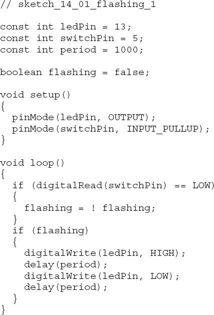
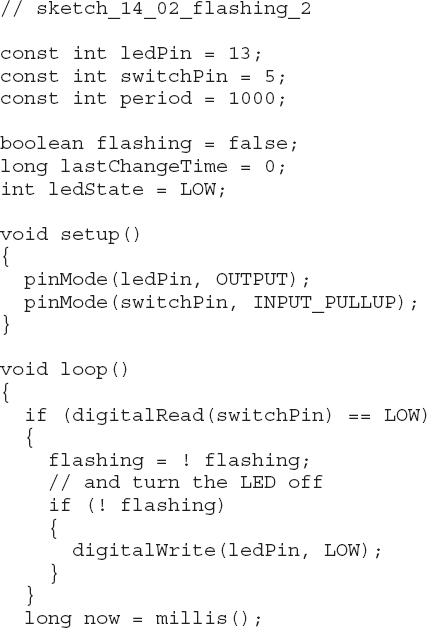
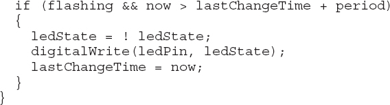
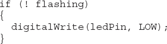
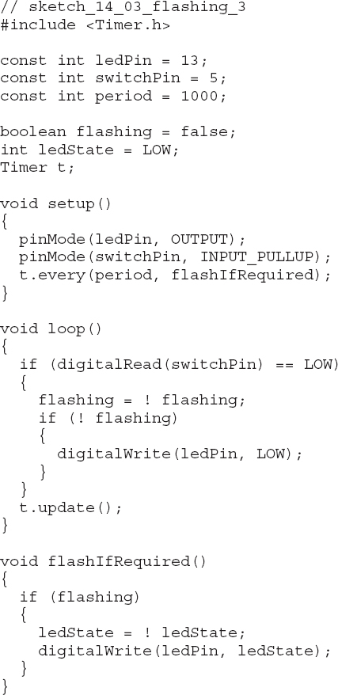
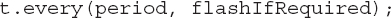
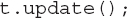

14
Managing with One Process
Programmers coming to Arduino from a background in programming large systems often cite the lack of multithreading and concurrency in Arduino as a deficiency. In this chapter, I’ll try to set the record straight and show you how to embrace the single-thread model of embedded systems.

Making the Transition from Big Programming
Arduino has attracted many enthusiasts, including me, who have spent years in the software industry and are used to teams of dozens of people contributing to a huge software effort, with all the related problems of managing the ensuing complexity. For us, the ability to write a few lines of code and have something interesting and physical happen almost immediately, without large amounts of engineering, is the perfect antidote to big software.
It does, however, mean that we often look for things in Arduino that we are used to seeing in our day jobs. When moving from the big development world to the miniature world of Arduino, one of the first adjustments we need to make is to the very simplicity of writing for Arduino. To develop a large system without the benefit of Test Driven Development, version control, and some kind of Agile process to follow is reckless. On the other hand, a large Arduino project may be only 200 lines of code written by one person. If that person is an experienced software developer, he or she can simply keep the details in mind without needing any of the usual accoutrements of development.
So stop fretting about version control, design patterns, writing unit tests, and having a refactoring IDE and just embrace the joyous simplicity of Arduino.
Why You Don’t Need Threads
If you are old enough to have programmed home computers in BASIC, then you remember that “doing one thing at a time” is simply how computers operate. In BASIC, if a game required a number of sprites to be moved apparently simultaneously, then you had to be smart and include a main loop that moved each sprite a little bit.
This mindset is a good one to have for Arduino programming. Rather than multiple threads each being responsible for one of the sprites, a single execution thread does a little bit of everything in turn, without “blocking” on any one thing.
Aside from multicore computers, essentially a computer only genuinely does one thing at once. The rest of the time, the operating system switches the processor’s attention among the numerous processes running on the computer. On the Arduino, with a limited need to do more than one thing at a time, you can code it yourself, as there is no operating system.
Setup and Loop
It is no accident that the two functions you must write for any sketch are setup and loop. The fact that loop repeats over and over again, indicates why you should not really allow loop to block. Your code should wiz through loop and around again before you know it.
Sense Then Act
Most Arduino projects contain an element of needing to control something. Therefore, the contents of a loop often:
• Check if buttons are pressed or a sensor threshold has been exceeded.
• Perform a relevant action.
A simple example of this would be a push switch that, when pressed, toggles LED flashing on and off.
The following example illustrates this. As you shall see later, however, the limitations imposed by having to wait while the LED flashes are sometimes not acceptable.

The problem with this code is that you can only check that the button has been pressed once the blinking has finished. If a button is pressed while the blinking is in progress, it won’t register. This may not be important to the operation of the sketch, but if it is important to register every button press, then you need to make sure the loop does not have any delays in it. In fact, once the flashing is triggered, the Arduino spends most of its time blinking and there is only a tiny window in which the button press can be registered.
The example in the next section solves this problem.
Pause Without Blocking
You can rewrite the previous sketch to avoid using delay:


In this sketch, I have added two new variables: lastChangeTime and ledState. The lastChangeTime variable records the last time the LED was toggled between on and off, and the ledState variable contains that on/off state, so when it needs to be toggled, you know what the LED’s current state is.
The loop now contains no delays. The first part of the loop checks for a button press, and if a button is pressed, it toggles the flashing state. The extra if statement, shown next, is simply a nice refinement that turns the LED off if the button press has caused flashing to be turned off. Otherwise, the LED might be left on, even though flashing has been canceled.

The second part of the loop finds the current millis() count and then compares this with the value in lastChangeTime with period added to it. This means that the code inside the if will only be run if more than period milliseconds has elapsed.
The ledState variable is then toggled and the digital output set accordingly. The value in now is then copied to lastChangeTime so the code can wait for the next period to elapse before being activated again.
The Timer Library
The “Pause Without Blocking” approach of the previous section has been generalized into a library that allows you to schedule repeating events using millis. Despite its name, the library has nothing to do with the hardware timers on the device and will, therefore, work just fine on most Arduino boards.
You can download the library from http://playground.arduino.cc//Code/Timer.
Using this library simplifies the code, as you can see here:

To use this library, you define a timer, in this case called t, and then within your setup function you specify a function that calls periodically using:

You then place the following line in your loop function:

Every time the update function is called, millis checks when any of the timed events need to be actioned, and if they do, it calls the linked function (in this case flashIfRequired).
The Timer library also has a number of other utility functions; for more information on the library, see the link at the beginning of this section.
Summary
In this chapter, you learned how to allow multiple things to appear to happen at the same time on an Arduino, without using multiple threads. This is simply a matter of adjusting your mindset to the constraints imposed by your favorite little microcontroller board.
In the final chapter of this book, you will learn how to share your code creations with the Arduino community by creating and publishing Arduino libraries.